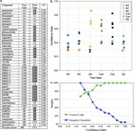
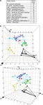
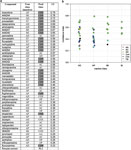
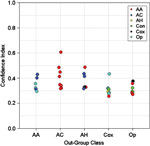
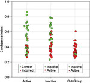

INTRODUCTION
Genomic expression signatures provide a generic indicator of diverse cellular physiologies.1, 2, 3, 4, 5, 6, 7, 8 Recently, expression signatures have been used to identify clinically relevant cellular physiologies that result from drug treatments in vitro.9, 10, 11 A pattern recognition-based approach has potential utility for multiplexed in vitro drug discovery, as gene expression signatures constitute a comprehensive assay for disparate drug activities, and can predict clinical drug efficacy directly from cellular physiology, even when the specific drug target is unknown.11 However, previous chemical genomic studies with mammalian cells have resolved only a single type of drug activity9, 10 or employed primary cell co-culture systems apt to exhibit batch-to-batch inconsistency.11 For the potential of this discipline to be met, it will be necessary to establish a simple cellular platform capable of evaluating multiple distinct clinical efficacies at once for each compound screened. It will also be necessary to develop a practical, quantitative means to prioritize the most promising hits for development as therapeutics.
Here, we describe an efficacy-profiling platform, based on the human cortical neuron 1A (HCN-1A) cell line, capable of predicting multiple different drug class activities with good precision. Using microarray data from cells treated with multiple examples of nine distinct drug classes, we develop a feature assessment algorithm called 'sampling over gene space' (SOGS), that works well with small sample numbers, does not make assumptions about the behavior of individual features, and yields a convenient metric for ranking prediction strength based on a vote-counting algorithm. We employ SOGS to distinguish drug classes that are active or inactive in our cell culture system. Then, we use SOGS to build multiplexed statistical models of drug action with better predictive accuracy than models built with standard supervised classification methods. Finally, by applying the SOGS-based strength metric to these predictions, we establish a ranking system for assigning confidence to chemical genomic drug utility predictions.
RESULTS
Sampling Over Gene Space
Supervised classification methods learn from example data sets of known class to identify data features (biomarkers) that can classify unfamiliar data sets. High-dimensional microarray data, however, can lead to models that are 'overfit' on distracting features unrelated to the phenomenon being modeled. Algorithms that employ stochastic feature evaluation, such as Random Forest (RF), are resistant to overfit, but the recursive partitioning aspect of RF can lead to high model variance and weak predictions. Other classification methods such as linear discriminant analysis (LDA) and support vector machine (SVM) typically make stronger predictions, but lack the resistance to overfit, imparted by the stochastic aspects of RF. To incorporate the benefits of stochastic feature evaluation into LDA and SVM, we developed a procedure called SOGS that randomly samples a set of features for each episode of model construction by LDA or SVM. Multiple iterations of model construction yield a compendium of class assignments for the unknown. The class receiving the greatest overall number of classifications 'wins' the final prediction. Such a combination of stochastic feature evaluation with the stable LDA and SVM modeling methods minimizes overfit, while increasing prediction strength.
Active vs Inactive Drug Class Discrimination
Undifferentiated cultures of the HCN-1A human cortical neuron cell line were treated with 83 different drugs comprising nine defined pharmaceutical classes: antianxiety, anticonvulsant, antidepressant, antihypertensive, antipsychotic, cyclooxygenase (COX) inhibitor, matrix metalloprotease (MMP) inhibitor, opioid receptor agonist, and statin. Each of these drug classes was generally characterized for activity vs inactivity in this culture system by comparing microarray data from each pairwise with the control vehicle-treated class, using LDA. LDA was conducted either with ANOVA-filtered data, or by incorporating SOGS to analyze unfiltered data. Drug classes were scored as either active or inactive, as indicated by prediction P-value. LDA performed with ANOVA yielded P>0.05 for all drug classes and was thus unable to discriminate any drug class treatment from control treatment (Table 1). In contrast, LDA performed with SOGS identified five pharmaceutical classes (antianxiety, anticonvulsant, antihypertensive, COX inhibitor, and opioid) that exhibited genomic expression distinct from controls with P0.05, and thus deemed active in our culture system; four classes (antidepressant, antipsychotic, MMP inhibitor, and statin) were statistically indistinguishable from controls with 0.68P1.0 (Table 1), and thus deemed inactive.
Prediction of Drug Efficacy by Supervised Classification
The value of SOGS to multiplexed drug efficacy prediction was investigated. LDA and SVM were each conducted with or without the use of SOGS, to analyze data from the five drug classes that exhibit activity in HCN1A cell culture (antianxiety, anticonvulsant, antihypertensive, COX inhibitor, and opioid). These methods were conducted in a 'leave-one-out' fashion, where every sample is treated once as an unknown in an independent episode of model construction, allowing an objective assessment of predictive accuracy with unfamiliar compounds. LDA and SVM exhibited 39.5 and 44.2% predictive accuracy, respectively, when used to directly analyze microarray data. By comparison, when SOGS was incorporated, the predictive accuracy of LDA and SVM rose to 67.4% (Figure 1) and 58.1%, respectively. When RF, which already contains a stochastic element, was conducted using the same data, a predictive accuracy of 58.1% was achieved. Thus, by introducing a stochastic element to LDA and SVM, SOGS imparted predictive accuracy equal to or better than the tree-based RF supervised classification technique.
Figure 1.
(a) Drug class predictions and CI scores: compounds active in culture. True Class, known therapeutic efficacy; Pred Class, drug class prediction by SOGS-based LDA for the expression profiles elicited by the drugs listed on the left; CI, SOGS-derived CI measure of prediction strength; shaded designations, correct predictions; AA, antianxiety; AC, anticonvulsant; AH, antihypertensive; Con, control; Cox, cyclooxygenase inhibitor, Op, opioid. (b) Confidence ranking by class: active drug predictions. True Class, known therapeutic efficacy; colored dots, predicted efficacy. (c) CI vs prediction accuracy. Correct calls, percent correct prediction of samples with a CI score the corresponding value. Samples classified, percent of total samples with a CI score the corresponding value.
Full figure and legend (274K)Graphical Class Separation
SVM, LDA, and RF each establish hyperboundaries between sample types in n-dimensional gene space; biomarkers given the greatest weight provide optimal class separation. Three-dimensional graphical depiction of the first three linear discriminants of the 12 most heavily weighted biomarkers identified by LDA (without SOGS), for example (Figure 2b), illustrates the drug efficacy class separation provided by this gene assemblage (Figure 2a).
Figure 2.
(a) Top 12 LDA biomarkers. LDA performed with data from the five active drug classes and controls identified 12 markers with counts of 17 or greater. Marker count, number of times out of the total 43 model building episodes a particular gene was selected as a marker. (b) Spatial class separation by top 12 LDA biomarkers. Axes represent the first three linear discriminants of the expression levels of the 12 genes from Figure 3a. The graph is shown twice, perpendicular to the XY plane (left) and from 20° rotation around the y-axis (right). Red, antianxiety; dark blue, anticonvulsant; yellow, antihypertensive; green, DMSO control; black, COX inhibitor; turquoise, opioid; circles, correctly predicted treatments; triangles, misclassified treatments. Lines connecting correctly predicted treatments delineate the hypervolume occupied by each accurately defined sample class.
Full figure and legend (236K)Confidence Index
Supervised classification methods make predictions based on the number of votes per class received by a given sample; the category receiving the greatest number of votes wins the prediction. In this winner-take-all scheme, predictions based on votes won by slight or wide margins are indistinguishable. To utilize the information contained in the vote margins for each sample, we devised a confidence index (CI) that indicates the winning vote proportion from the SOGS-based LDA models (Figure 1a). The CI provides a continuous output from zero-to-one, indicating the strength of association of a sample with its predicted class. Comparison of this CI with the predictions indicated that the magnitude of the CI scales closely with the accuracy of the predictions (Figure 1b, c): 94.1% of predictions above a CI of 0.45 are accurate, while 50.0% of predictions below a CI of 0.45 are incorrect. Thus, the CI derived from SOGS-based modeling is an effective general measure of prediction quality.
Classification and Confidence Ranking of Inactive Compounds
The finding that SOGS-based LDA effectively discriminated untreated controls from active compounds (Figure 1) suggested that inactive compounds might also be effectively classified. To investigate this capacity, we presented the expression data from the drugs found to be inactive in HCN1A cell culture (antidepressant, antipsychotic, MMP inhibitor, and statin, Table 1) to a SOGS-based LDA model constructed using data from active drug treatments. As expected for inactive compounds, a large percentage of these samples (51.1%) were classified as controls (Figure 3). To characterize the remaining presumptive false positives, a CI value was derived for each prediction and ranked by magnitude. Similarly to the active compound predictions, a high CI value corresponded to accurate 'control' prediction of inactive classes, while a low CI value corresponded to activity mispredictions: 80.8% of predictions above a CI of 0.45 were accurate, while 85.7% of predictions below a CI of 0.45 were incorrect. Thus, the CI serves as a means of prioritizing both correctly predicted efficacies and correctly predicted inactive compounds.
Figure 3.
(a) Drug class predictions and CI scores: compounds inactive in culture. Inactive drug classes predicted by model built from active drug classes. True Class, known clinical efficacy; Pred Class, predicted efficacy (shaded designations, correct predictions); ST, statin; AP, antipsychotic; AD, antidepressant; MI, MMP inhibitor; AA, antianxiety; AC, anticonvulsant; AH, antihypertensive; Con, control; Cox, cyclooxygenase inhibitor, Op, opioid. Percent correct, proportion predicted as controls. (b) Confidence ranking by class: inactive drug predictions. Inactive class, true drug utility; AD, antidepressant; AP, antipsychotic; MI, MMP inhibitor; St, statin; colored dots, predicted activity.
Full figure and legend (231K)Classification and Confidence Ranking of Out-group Activities
In addition to accurately assessing drug activity and inactivity, the ideal drug assay would exclude active compounds that elicit physiology distinct from the desired activities (ie, drugs that induce side effects). Such prospective false positives were simulated by omitting each entire active drug class from a SOGS-based LDA model built with data from the remaining four active classes and controls. Data from the members of the omitted class were presented to the model for prediction, and the CI for each prediction was calculated (Figure 4). By definition, these out-group drug predictions are inherently incorrect; as such, they would be expected to have a low overall CI compared to correctly predicted active compounds. Accordingly, the average out-group CI value of 0.35 0.012 was indistinguishable from the average CI of 0.360.018 for incorrect activity predictions (Figure 1), and substantially lower than the average CI of 0.520.031 for accurate activity predictions (Figure 1). Thus, the CI can be used as a universal ranking measure of true drug activity, drug inactivity, and off-target (nonspecific) activity (Figure 5), in vitro.
0.012 was indistinguishable from the average CI of 0.360.018 for incorrect activity predictions (Figure 1), and substantially lower than the average CI of 0.520.031 for accurate activity predictions (Figure 1). Thus, the CI can be used as a universal ranking measure of true drug activity, drug inactivity, and off-target (nonspecific) activity (Figure 5), in vitro.
Figure 4.
Confidence ranking by class: out-group activity mispredictions. Entire active drug classes were serially withheld as out-groups from models built with remaining active drug data, and the CI of each inherent misprediction was calculated. Out-group class, true utility; colored dots, class of misprediction. AA, antianxiety; AC, anticonvulsant; AH, antihypertensive; Con, control; Cox, cyclooxygenase inhibitor, Op, opioid.
Full figure and legend (59K)Figure 5.
Correlation of CI with prediction accuracy: summary of active, inactive and off-target class predictions. Active category green and red dots, correctly and incorrectly predicted active-class drugs, respectively; Inactive category green and red dots, inactive-class drugs correctly and incorrectly predicted as being inactive or active, respectively; out-group green and red dots, mispredictions of off-target active drug efficacy.
Full figure and legend (70K)DISCUSSION
Previously, we found that primary cultures derived from brain tissue exhibited genomic expression profiles that allowed prediction of antidepressant, antipsychotic, and opioid drug efficacy.11 However, the use of primary cultures, while appealing physiologically, presents inherent experiment-to-experiment consistency issues that must be addressed in order to establish a stable screen. Cell line monoculture provides a simpler system that is likely to be more amenable to reproducible chemical genomics, but the ability of immortalized cell lines to respond to multiple disparate drugs with signature expression profiles has not been explored. Previous chemical genomic studies have also lacked a quantitative means of identifying drugs that have nonspecific effects outside the targeted desirable pharmaceutical effect. The ability to discriminate such nonspecificity early in drug discovery would be a substantial advantage, because many candidate pharmaceuticals fail late in development due to unforeseen side effects. Consequently, we sought to determine whether a cell line-based activity prediction platform could be established as a unified guide for identifying multiple distinct drug utilities, while concurrently distinguishing inactive compounds and active drugs with undesired 'side' effects.
Microarray data present special challenges to existing supervised classification statistical techniques because of the abundance of uninformative features. Data pre-filtering techniques such as ANOVA are typically used to focus on informative features, but can make erroneous distributional assumptions that cause predictive models to be corrupted by noise. Accordingly, the supervised classification method of LDA using an ANOVA filter was unable to distinguish drug classes that were active or inactive in culture when compared pairwise with controls (Table 1). However, SOGS, which makes no a priori assumptions about data characteristics, enabled LDA to clearly parse the drug treatments into active and inactive classes (Table 1), even though no data pre-filtering was used to reduce noise. The objective nature of SOGS appears to improve class resolution for situations where sample number is small, data quality is noisy, and many features contribute to class differences—all common aspects of high-dimensional microarray experiments. In multiplexed activity prediction, the incorporation of SOGS into the widely used SVM and LDA methods enabled them to equal or exceed the performance of RF, the stochastic nature of which otherwise renders it superior in this application. Thus, SOGS provides an advantageous technique for contending with the noise that afflicts predictive microarray analyses.
The finding that undifferentiated HCN-1A cells provide a range of diverse genomic responses to drug action indicates that cell lines can be a suitable alternative to primary cell cultures for multiplexed predictive chemical genomics. Our assay effectively predicted the drug classes of anticonvulsant, antihypertensive, COX inhibitor, and opioid, which act, respectively, on diverse cellular targets such as ion channel, enzyme, or G protein-coupled receptor. Typically, biochemical assays for such disparate activities are carried out independently. In contrast, the resolution of these activities by a single cell type using a single type of output, that is, gene expression profile, enables the screening of individual compounds for multiple functions simultaneously. The presence of substantial complexity at the systems biology level in HCN-1A cells, as suggested by expression of over 50% of the genes on our microarray, is likely to provide many additional functional points for pharmacological intervention. Studies in yeast have found that approximately 50% of gene deletions lead to recognizable transcription pattern changes, corresponding to a range of physiological processes.3 If these studies are an indication, the potential for mammalian cell-based multiplexed drug activity prediction may be substantial. Previously, we have shown that primary neuronal cultures can be used to predict the efficacy of antidepressant and antipsychotic drug classes.11 The apparent lack of responsiveness of undifferentiated HCN-1A cell cultures to the antidepressant, antipsychotic, statin, and MMP inhibitor drug classes may result from the lack of expression of active targets or components of the signal transduction machinery that mediate some of these activities. Alternatively, this culture system may exhibit a time- or dose-dependent course of physiological response not captured by our treatment regimens. Future predictive accuracy is likely to be improved by optimizations of these treatment parameters as well as utilization of culture systems that possess the appropriate systems biology for particular drug responses of interest.
To enhance the accuracy of activity profiling, we sought to create a system for determining which predictions are likely to be accurate. Again, SOGS provided a reliable means of doing so. Using the SOGS-derived CI, predictions were ranked by strength in a manner that closely parallels prediction accuracy. The broad utility of the CI as an identifier of drug nonspecificity (Figure 4) or inactivity (Figure 3), as well as true drug efficacy (Figure 1), provides the core of a concerted in vitro system of drug efficacy prediction. When we modeled each of these aspects of drug action individually, ranking by CI effectively sorted the predictions by accuracy. When these prediction types are considered together as a function of CI (Figure 5), values may be chosen that provide a desired stringency of efficacy prediction accuracy and simultaneous intolerance of false positives (drugs that induce physiologies other than those encompassed by the assay). This capacity is of practical importance in drug development because many candidates are disqualified as therapeutics for possessing side effects or toxicity resulting from nonspecific activity. In current practice, these side effects are usually discovered late in the development process, imposing substantial burden. By identifying side effects at an early stage, this inefficiency can be minimized.
In practice, it will be necessary to establish a balance between the accurate predictions that are captured, and the false positives that are allowed. For example, above a CI threshold of 0.61, 100.0% of target activities and 100% of inactive compounds identified are correct, while 100.0% of off-target activities are excluded (Figure 5). However, this stringent CI boundary has the effect of deprioritizing a large portion of the accurately predicted target activities as well as restricting the classes captured to only the most confidently predicted antihypertensives and COX inhibitors. In order to capture a higher percentage of the accurately predicted true activities and encompass anticonvulsant and opioid predictions, a lower CI value could be chosen with the trade-off of tolerating a higher proportion of false-positive predictions. Above a CI threshold of 0.45, for example, the strongest activity predictions from the four most predictable drug classes are captured with an accuracy of 94.1%, while tolerating 19.2% inaccuracy of inactive class predictions and including 8.3% of all off-target activities (Figure 5). In practice, selection of the ideal CI will be influenced by the relative proportions of on-target and off-target activities present in the given library of compounds to be assayed.
In our assay, the antianxiety class of culture-active compounds was least predictable (33.3% accuracy). This drug class also had the lowest number of example data sets (six) with which to build the statistical models, possibly contributing to the low prediction accuracy. Consistent with its misprediction, the average CI for the antianxiety class was low (Figure 1b). In spite of this low CI, an interesting misclassification trend was evident among the antianxiety drugs; three out of six were classified as anticonvulsant by the active drug class modeling (Figure 1a and b), or when the class was treated as an out-group (Figure 4). As benzodiazepines, each of these 'misclassified' anxiolytic drugs do, indeed, also possess clinical anticonvulsant activity.12 Correspondingly, 100% of the anticonvulsants were classed as antianxiety when the anticonvulsants were treated as an unknown out-group. Three-dimensional depiction of class separation yielded by the top LDA biomarkers (Figure 2a) shows the close proximity of antianxiety and anticonvulsant drug classes in gene space (Figure 2b), consistent with the prediction of the functional overlap between members of these drug classes. Notably, this functional convergence was predicted by the system even though no explicit knowledge of shared efficacy was built into the model. A future direction will be to refine the ability of this system to identify cryptic clinical efficacy of existing drugs. Previously, we have shown that classes of therapeutic drug-induced cellular physiology can be modeled and used to predict the therapeutic action of drugs, even when no examples of the specific biochemical activity of the drug being assayed were used to build the predictive model. For example, selective serotonin reuptake inhibitors were correctly predicted as antidepressants even when only tricyclic and monoamine oxidase inhibitor antidepressants were used for biomarker model construction.11 Thus, it is possible to construct expression signatures of general therapeutic physiology that are potentially applicable to identifying drugs that act on previously unidentified targets, when those targets mediate physiology similar to a known drug class of interest. This potential to identify drug candidates in the absence of direct target knowledge faces the fundamental requirement of having some means of establishing a desirable cellular physiology beforehand, whether through drugs or other manipulations thought to have therapeutic relevance.
The approach we have described here could facilitate drug development in several respects. Distinguishing compounds with potential side effects as part of the same early step in which desirable activities are recognized can potentially diminish the pursuit of dead-end candidates. The use of stable mammalian cell line monocultures offers the prospect of lower inter-experimental variation and greater reliability than the use of primary cell cultures in this application. The capacity to assay individual drug candidates for multiple disparate activities in parallel can collapse into a single-step screens that would otherwise be conducted independently. In the future, it should be possible to expand the range of target efficacies to include a larger number of existing drug classes, as well as therapeutically relevant cellular physiologies that no small-molecule drugs currently mimic, such as can be induced by target gene suppression or growth factor treatment. The establishment of a quantitative multiplexed in vitro chemical genomic system for identifying and prioritizing novel activities provides a foundation for simplified and accurate gene expression-based drug discovery and development.
METHODS
Cell Culture
HCN-1A cells (ATCC) were grown to approximately 80% confluence in poly-L-lysine-coated 12-well cell culture plates (Corning) in DMEM (Gibco) supplemented with 10.0% FBS and pen/strep. Each drug was dissolved in DMSO (final DMSO concentration, 1.0 l/ml) and used to treat a single culture for 24 h prior to harvest. Cultures treated with water-soluble drugs were supplemented with DMSO vehicle. Final drug concentrations were at pharmacologically relevant doses: alprazolam (1.0 M), diazepam (10.0 M), flurazepam (5.0 M), triazolam (1.0 M), zolpidem (10 M), zopiclone (2.0 M), carbamazepine (10.0 M), ethosuximide (500.0 M), felbamate (50.0 M), gabapentin (40.0 M), phenytoin (10.0 M), riluzole (5.0 M), valproate (200.0 M), vigabatrin (100.0 M), diltiazem (10.0 M), nifedipine (10.0 M), niguldipine (10.0 M), nimodipine (10.0 M), nitrendipine (5.0 M), verapamil (10.0 M), YS-035 (N-(-2-[3,4-dimethoxyphenyl]ethyl)-3,4-dimethoxy-N-methylbenzeneethanamine) (10.0 M), aspirin (1.8 mM), dup.697 (7 M), flurbiprofen (100.0 m), ibuprofen (360.0 M), indomethacin (8.0 M), naproxen (25.0 M), NS398 (10.0 M), Sulindac (9.0 M), DALDA (0.1 M), DAMGO (0.1 M), Dynorphin A (0.5 M), Endomorphin (1.0 M), Enkephalin (1.0 M), U50488 (100.0 pM), U62066 (1.0 M), lovastatin (1.0 M), mevastatin (1.0 M), pravastatin (1.0 M), trazodone (2.0 M), simvastatin (1.0 M), X444241 (1.5 M), clomipramine (1.2 M), trimipramine (1.5 M), amoxapine (2.0 M), clozapine (2.5 M), bupropion (2.5 M), tranylcypromine (0.4 M), fluvastatin (1.0 M), citalopram (0.3 M), desipramine (2.0 M), maprotiline (1.0 M), fluphenazine (0.08 M), nortryptyline (0.7 M), paroxetine (0.3 M), 444242 (N-[[(4,5-dihydro-5-thioxo-1,3,4-thiadiazol-2-yl)amino]carbonyl]-L-phenylalanine) (11.0 M), 444240 ( -[[[4,5-dihydro-5-thioxo-1,3,4-thiadiazol-2-yl)amino]carbonyl]amino]-((2-yridyl)piperazinyl)-(S)-benzenepropanamide) (0.15 M), 444244 (OA-Hycis-9-octadecenoyl-N-hydroxylamide oleoyl-N-hydroxylamide) (0.8 M), 444264 (2-(hydroxamidocarbonylmethyl)-4-methylpentanoyl-homophenylalanine methylamide) (0.01 M), 444251 (H-Cys1-Thr-Thr-His-Trp-Gly-Phe-Thr-Leu-Cys10-OH) (50.0 M), 364205 (Galardin) (0.003 M), 444249 ((2R)-[(4-biphenylylsulfonyl)amino]-N-hydroxy-3-phenylpropionamide) (0.07 M), amitriptyline (1.0 M), triflupromazine (0.8 M), phenelzine (0.8 M), droperidol (0.16 M), imipramine (2.0 M), chlorprothixene (1.2 M), chlorpromazine (0.9 M), thiothixene (0.25 M), perphenazine (0.33 M), pimozide (0.05 M), protriptyline (0.4 M), risperidone (0.04 M), thioridazine (4.0 M), haloperidol (0.2 M), doxepin (1.0 M), trifluperazine (0.1 M), loxapine (0.5 M), fluoxetine (0.5 M), fluvoxamine (1.5 M), sertraline (1.4 M), and iproniazid (0.6 M). Drugs were purchased from Sigma, Tocris Cookson, or Calbiochem.
-[[[4,5-dihydro-5-thioxo-1,3,4-thiadiazol-2-yl)amino]carbonyl]amino]-((2-yridyl)piperazinyl)-(S)-benzenepropanamide) (0.15 M), 444244 (OA-Hycis-9-octadecenoyl-N-hydroxylamide oleoyl-N-hydroxylamide) (0.8 M), 444264 (2-(hydroxamidocarbonylmethyl)-4-methylpentanoyl-homophenylalanine methylamide) (0.01 M), 444251 (H-Cys1-Thr-Thr-His-Trp-Gly-Phe-Thr-Leu-Cys10-OH) (50.0 M), 364205 (Galardin) (0.003 M), 444249 ((2R)-[(4-biphenylylsulfonyl)amino]-N-hydroxy-3-phenylpropionamide) (0.07 M), amitriptyline (1.0 M), triflupromazine (0.8 M), phenelzine (0.8 M), droperidol (0.16 M), imipramine (2.0 M), chlorprothixene (1.2 M), chlorpromazine (0.9 M), thiothixene (0.25 M), perphenazine (0.33 M), pimozide (0.05 M), protriptyline (0.4 M), risperidone (0.04 M), thioridazine (4.0 M), haloperidol (0.2 M), doxepin (1.0 M), trifluperazine (0.1 M), loxapine (0.5 M), fluoxetine (0.5 M), fluvoxamine (1.5 M), sertraline (1.4 M), and iproniazid (0.6 M). Drugs were purchased from Sigma, Tocris Cookson, or Calbiochem.
Sample Processing
Biotin-labeled cDNA was made with poly(T) primers from 15 g of total RNA extracted from Trizol cell lysates. Gene expression was measured by hybridization of each sample (one sample per drug treatment) to the proprietary CuraChip microarray of 11 000 oligonucleotide probes. Slides were hybridized for 15 h with constant rotation at 30°C, washed for 30 min at room temperature (RT), incubated in streptavidin solution for 30 min at 4°C, washed three times for 15 min at RT, incubated in Cy3-conjugated detection buffer for 30 min at 4°C, and washed three times for 15 min at RT. Slides were scanned with a GMS 418 Scanner (Genetic Microsystems, Woburn, MA, USA) and analyzed with IMAGENE software (BioDiscovery, Marina Del Rey, CA, USA). Of 11 000 genes on the chip, 6047 were found to be expressed at least 3 background.
Data Analysis
All genes detectable at least 3 background after signal normalization were included in the 90 microarray data set for analysis. The modeling methods of LDA and SVM (linear kernel) were conducted either directly with ANOVA pre-filtered data or in an iterative process of selecting random inputs from pre-filtered feature space, a process we term SOGS. RF (125 trees, with 15 random inputs sampled at each set and a node size of 5) was conducted with ANOVA pre-filtered data. ANOVA data pre-filtering (P<0.0001) was accomplished within a leave-one-out cross-validation loop to ensure that the resultant models were not biased by the marker selection process or over-fit within the confines of the experiment. The leave-one-out approach, where every sample data set was omitted from a discreet episode of model building, then presented to that model for classification, enabled all samples to be treated as unknowns for prediction by models naïve to the sample being classified. All models used equal weighting of class priors to prevent overemphasis of more heavily represented drug classes. To incorporate SOGS into LDA or SVM, two features are selected at random and evaluated by an index of class separation (Hotelling's T2 in the case of LDA, and accuracy of the fitted model in the case of SVM), with the more predictive of the two features retained for model construction. This process is repeated until five features are collected, which are then used to predict the unknown. Bagging is accomplished by sampling with replacement from the training set. In all, 500 such model-building iterations are conducted, with the classification from each recorded. Unknown membership is assigned to the class receiving the most class assignments. The final accuracy of each method is assessed as the percent correct out of the total sample class predictions made.
The CI equals the ratio of the number of votes for the predicted class to the total number of votes cast across all classes. CI values were normalized to class number for model comparisons. All statistical algorithms were performed using the 'R' statistical software system (www.r-project.org).
DUALITY OF INTEREST
The work described was conducted by the authors while under the employ of CuraGen, Inc., which provided all financial support.
References
| 1. | Gasch AP, Huang M, Metzner S, Botstein D, Elledge SJ & Brown PO. Genomic expression programs in the response of yeast cells to environmental changes. Mol Biol Cell 2000; 11: 4241−4257. | PubMed | ISI | ChemPort | |
| 2. | Golub TR, Slonim DK, Tamayo P, Huard C, Gaasenbeek M & Mesirov JP et al.. Molecular classification of cancer: class discovery and class prediction by gene expression monitoring. Science 1999; 286: 531−537. | Article | PubMed | ISI | ChemPort | |
| 3. | Hughes TR, Marton MJ, Jones AR, Roberts CJ, Stoughton R & Armour CD et al.. Functional discovery via a compendium of expression profiles. Cell 2000; 102: 109−126. | Article | PubMed | ISI | ChemPort | |
| 4. | Schaner ME, Ross DT, Ciaravino G, Sorlie T, Troyanskaya O & Diehn M et al.. Gene expression patterns in ovarian carcinomas. Mol Biol Cell 2003; 14: 4376−4386. | Article | PubMed | ISI | ChemPort | |
| 5. | Sorlie T, Perou CM, Tibshirani R, Aas T, Geisler S & Johnsen H et al.. Gene expression patterns of breast carcinomas distinguish tumor subclasses with clinical implications. Proc Natl Acad Sci USA 2001; 98: 10869−10874. | Article | PubMed | ISI | ChemPort | |
| 6. | Pomeroy SL, Tamayo P, Gaasenbeek M, Sturla LM, Angelo M & McLaughlin ME et al.. Prediction of central nervous system embryonal tumour outcome based on gene expression. Nature 2002; 415: 436−442. | Article | PubMed | ISI | ChemPort | |
| 7. | Ross DT, Scherf U, Eisen MB, Perou CM, Rees C & Spellman P et al.. Systematic variation in gene expression patterns in human cancer cell lines. Nat Genet 2000; 24: 227−235. | Article | PubMed | ISI | ChemPort | |
| 8. | van 't Veer LJ, Dai H, van de Vijver MJ, He YD, Hart AA & Mao M et al.. Gene expression profiling predicts clinical outcome of breast cancer. Nature 2002; 415: 530−536. | Article | PubMed | ISI | ChemPort | |
| 9. | Johnson PH, Walker RP, Jones SW, Stephens K, Meurer J & Zajchowski DA et al.. Multiplex gene expression analysis for high-throughput drug discovery: screening and analysis of compounds affecting genes overexpressed in cancer cells. Mol Cancer Ther 2002; 1: 1293−1304. | PubMed | ISI | ChemPort | |
| 10. | Stegmaier K, Ross KN, Colavito SA, O'Malley S, Stockwell BR & Golub TR et al.. Gene expression-based high-throughput screening (GE-HTS) and application to leukemia differentiation. Nat Genet 2004; 36: 257−263. | Article | PubMed | ISI | ChemPort | |
| 11. | Gunther EC, Stone DJ, Gerwien RW, Bento P & Heyes MP. Prediction of clinical drug efficacy by classification of drug-induced genomic expression profiles in vitro. Proc Natl Acad Sci USA 2003; 100: 9608−9613. | Article | PubMed | ChemPort | |
| 12. | Hardman JG, Limbird LE & Gilman AG. Goodman and Gillman's The Pharmacological Basis of Therapeutics 10th edn. McGraw-Hill Companies, Inc.: New York 2001;. |
MORE ARTICLES LIKE THIS
These links to content published by NPG are automatically generated
RESEARCH
Syndrome identification based on 2D analysis software
European Journal of Human Genetics Article Response
Syndrome identification based on 2D analysis software
European Journal of Human Genetics Article Response
Nature Genetics Letter (01 May 2003)